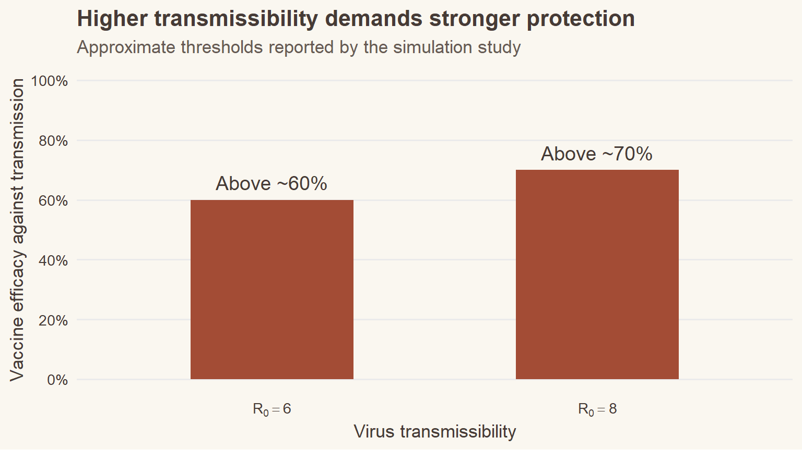

When the virus changed the rules
Imagine spending two weeks in hotel quarantine, testing negative for COVID-19, and finally returning home. For much of the early pandemic, systems like this helped Australia and New Zealand prevent imported infections from spreading into the community.
But what happens when the virus becomes much easier to transmit?
The emergence of the Delta variant raised an important question: could vaccination keep border quarantine effective, even as COVID-19 became more contagious?
A study by Zachreson et al. (2022), published in Science Advances, investigated this question using computer simulations.
The findings suggest that vaccination could reduce the additional risk created by more transmissible variants. However, vaccination alone was not enough to guarantee protection.
How did the researchers investigate the problem?
Rather than experimenting with real travellers, the researchers built a computer model of a quarantine facility.
The simulated facility accommodated 100 travellers and employed 20 workers. Travellers completed a minimum 14-day quarantine period, with testing and isolation procedures designed to detect infections.
The researchers investigated how quarantine performance changed under different combinations of:
- Virus transmissibility: How easily the virus spreads.
- Vaccine efficacy against transmission: How effectively vaccination reduces infection and onward transmission.
- Community vaccination coverage: How many people outside quarantine are vaccinated.
They then used a second simulation model to estimate the possibility of community outbreaks following a quarantine breach.
This allowed the researchers to explore how vaccination and quarantine measures might perform under increasingly challenging conditions.
Finding 1: More contagious variants require stronger protection
One of the clearest findings was that the amount of vaccine protection required increased as the virus became more transmissible.
The researchers measured transmissibility using the basic reproduction number, written as \(R_0\). A higher \(R_0\) indicates that an infected person could, on average, infect more people in a population without immunity or other controls.
The study compared scenarios against a baseline representing an unvaccinated virus with \(R_0 = 3\).
As shown in Figure 1, the model suggested that vaccine efficacy against transmission needed to exceed approximately 60% when \(R_0 = 6\), and 70% when \(R_0 = 8\), to keep the infection pressure from quarantine breaches near the baseline level.
Note: The bars illustrate approximate thresholds reported by Zachreson et al. (2022), not independently calculated values or precise policy targets.
The message is straightforward: vaccination can compensate for some of the increased transmission risk, but a more contagious virus requires stronger vaccine protection.
These percentages are approximate results from the simulation, not universal vaccination targets or measurements of protection against severe disease.
Finding 2: What happens after quarantine matters too
Even a well-managed quarantine facility cannot completely eliminate the possibility of an infected person reaching the community.
The researchers therefore investigated another important question: what happens when an infection escapes quarantine?
Their simulations showed that community vaccination could make a substantial difference, but its effectiveness depended on both vaccine performance and vaccination coverage.
When vaccine efficacy against transmission was below approximately 60%, even high community vaccination coverage provided relatively limited improvements in outbreak protection.
However, when highly effective vaccines were combined with high community vaccination coverage, the results were dramatically different.
In some favourable scenarios, the modelled time until a 50% probability of an outbreak involving at least five cases increased from approximately 15 days in the baseline scenario to around 1,000 days.
These were modelled outcomes under specific assumptions, not predictions of when an outbreak would actually occur.
The finding highlights an important distinction: vaccination inside quarantine reduces the risk of an infection escaping, while vaccination in the community helps reduce the consequences if one does.
Finding 3: Vaccination was not the only safeguard
The study also examined infection-control measures within quarantine facilities.
These included reducing opportunities for transmission between travellers and workers.
When the researchers simulated weaker infection-control measures, the estimated risk of quarantine breaches increased.
As summarised in Table 1, effective quarantine protection relies on safeguards operating at different stages of infection risk.
| Safeguard | Where it works | Why it matters |
|---|---|---|
| Vaccination of travellers and workers | Inside quarantine | Reduces transmission and the risk of infectious breaches |
| Community vaccination | Outside quarantine | Reduces the chance of a breach developing into an outbreak |
| Infection-control measures | Within quarantine facilities | Limits opportunities for the virus to spread |
The important takeaway is that these safeguards address different parts of the problem.
Vaccination reduces transmission risk, community protection limits the consequences of breaches, and infection-control measures help prevent infections from spreading within quarantine facilities.
No single safeguard can fully replace the others.
What are the limitations?
Although the findings provide useful insights, they were produced using computer simulations rather than direct experiments in real quarantine facilities.
The researchers made assumptions about quarantine conditions, vaccine performance and community vaccination coverage.
For example, the model treated vaccination coverage as constant and did not include waning immunity over time.
The results also reflect assumptions relevant to the Delta-era pandemic.
Therefore, the numerical thresholds should not be interpreted as recommendations for today’s COVID-19 policies without considering newer evidence.
Instead, the study is most useful for illustrating how different protective measures interact when a virus becomes more transmissible.
Conclusion: Protection works best in layers
So, could vaccination keep border quarantine effective against Delta?
The research suggests that vaccination could offset some of the additional risk caused by more transmissible variants, provided that vaccines offered sufficiently strong protection against transmission.
However, effective border protection also depended on vaccination throughout the community and strong infection-control measures within quarantine facilities.
The broader lesson is that managing infectious disease risk requires multiple layers of protection working together.
As viruses evolve, relying on any single measure becomes increasingly risky.
Reference
Zachreson, C., Shearer, F. M., Price, D. J., Lydeamore, M. J., McVernon, J., McCaw, J., & Geard, N. (2022). COVID-19 in low-tolerance border quarantine systems: Impact of the Delta variant of SARS-CoV-2. Science Advances, 8, eabm3624. https://doi.org/10.1126/sciadv.abm3624